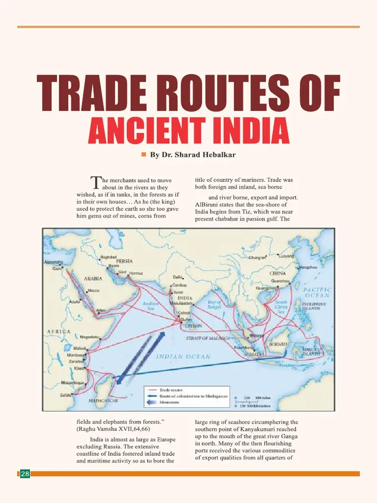

Why People Traveled to India in Ancient Times
Introduction
India has always been a magnet for travelers around the globe. In ancient times, it was renowned for its vibrant culture, intellectual advancements, and abundant resources. From merchants and pilgrims to scholars and explorers, people journeyed to this land of wonders for various reasons. Let’s explore the motivations behind these travels and their lasting impact.
Reasons for Travel
Trade : Ancient India was the heart of global trade, famous for its spices, textiles, and jewels. Merchants from Rome, Arabia, and China established thriving trade routes that connected civilizations.
Religion : India, the birthplace of major religions like Hinduism, Buddhism, and Jainism, became a spiritual haven. Pilgrims from far-off lands traveled to sacred sites such as Bodh Gaya to seek enlightenment.
Learning : Prestigious universities like Nalanda attracted scholars worldwide. These institutions were hubs of knowledge, fostering advancements in mathematics, astronomy, and medicine.
Culture : India’s rich traditions in art, music, and architecture inspired travelers. Marvels like the Ajanta and Ellora caves stood as a testament to the country's artistic brilliance.
Exploration : Adventurers and historians like Megasthenes documented the wonders of India, providing invaluable records of its diverse landscapes and societies.
Trade Routes to India
Religious Pilgrimage Routes